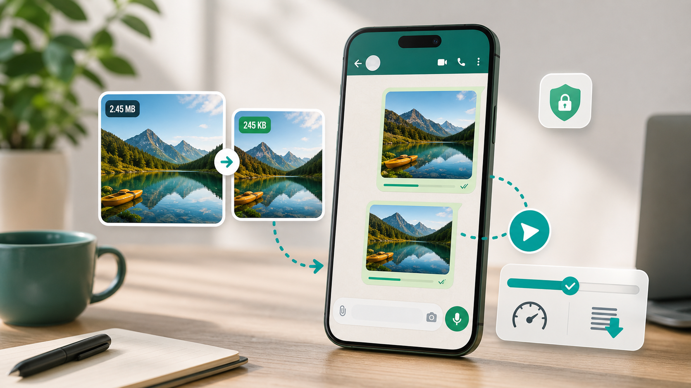

WhatsApp images
Compress image for WhatsApp without making it blurry.

WhatsApp is convenient, but it is not always kind to images. A sharp photo can look softer after sharing, and a large file can take longer to send on mobile data. If you are sending product pictures, event photos, certificates, menus, or family images, a little preparation before sharing can make the result cleaner.
The first step is to decide where the image will appear. A photo sent in a chat does not need to be as large as a print-ready image. A status image is usually viewed on a phone screen, so oversized dimensions add weight without much benefit. For most WhatsApp sharing, a width between 1200 and 1600 pixels is a sensible target. It keeps enough detail for viewing while avoiding huge file sizes.
For normal photos, use JPG output and start around 70 percent quality. If the photo has faces, fabric, food, or small product details, compare the before and after version before sending. If the image is a screenshot with text, avoid pushing quality too low because small letters can become fuzzy. In that case, try a slightly higher quality setting or keep the width closer to the original.
If you are sharing business images, do not rely only on WhatsApp compression. Compress the image yourself first, check that the logo and text are still readable, and then send it. This is especially useful for flyers, restaurant menus, product catalogs, and discount posters. If a design contains a lot of text, create a version specifically for phone screens instead of sending a giant desktop poster.
For WhatsApp profile photos, crop first. A square crop is easier to control than a full camera photo. Keep the face, logo, or main subject centered with some space around the edges. Then compress gently. Profile pictures are small on screen, but too much compression can make them look rough.
You can use the free image compressor to resize and compress before sending. Choose the WhatsApp preset if available, or set width around 1280 pixels and quality around 64 to 72 percent. If you need a stricter file limit, read the guide on how to reduce image size in KB online.
There is also a difference between sending an image for quick viewing and sending it for someone to reuse. If the recipient needs to print, edit, or upload the image somewhere else, send a less aggressive version or share the original through a more suitable method. If they only need to see the image on a phone, a lightweight compressed copy is usually enough.
For posters and flyers, simplify before compressing. Tiny text that looks fine on a desktop design may become unreadable after phone viewing and compression. Make the main message large, keep contrast high, and avoid crowding the edges. Then export a phone-friendly version and compress that file.
If WhatsApp is part of a business workflow, create reusable sizes. For example, keep one version for catalog images, one for status updates, and one for quick customer replies. This saves time and keeps your brand images consistent. Product photos especially benefit from a repeatable crop and compression setting.
Keep your original image untouched. Save the WhatsApp version with a simple filename, such as whatsapp-product-photo.jpg. That way you can keep one high-quality copy for later and one lightweight copy for sharing. The goal is not to make every image tiny. The goal is to send a file that opens quickly and still looks good on a phone.
Sources and further reading
- WhatsApp Help Center is the best place to check current app behavior and sharing guidance.
- web.dev image performance explains why smaller image files usually download faster.